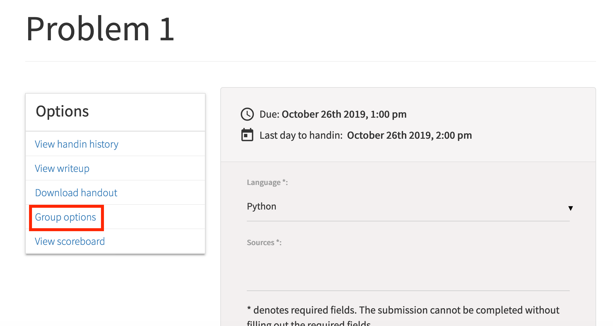
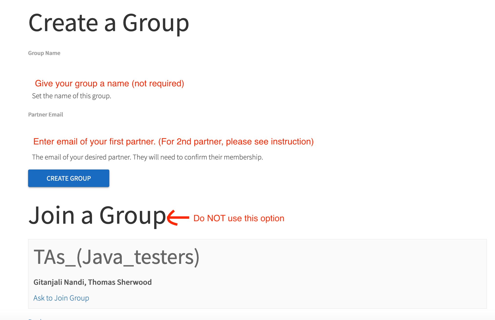

Autolab group submission for Coding Mini Project
The lowdown on submitting your coding mini project project as a group on Autolab.
The instruction below are for Problem 1
You will have to repeat the instructions below for EACH problem on the coding project on Autolab.
Form your group on Autolab
Groups on Autolab will NOT be automatically created
You will have to form a group on Autolab by yourself (as a group). Read on for instructions on how to go about this.
Please follow the instructions EXACTLY:
- Go to
Mini Project > Problem 1 - Under
Optionsclick onGroup Options, like here
- You will then get to this screen:
Do the following:

- Name your group if you want (not required)
- Enter the name of the 2nd person in your group and then click on
Create Group. (Unless things have changed, Autolab does not accept more than one email.) - Once the group is done, add the 3rd person to the group. (If your group is already of size 2, then you can skip this step.)
- Make sure you contact your group members to make sure they accept the invitation to your group.
- Once all have accepted (see the section below for more on this) your invitation ONLY THEN submit your code. (More instructions on submission later on.)
- You can re-submit as many times as you want till the deadline.
Do NOT click on Join a Group
Do NOT use the "Join a Group" feature. ONLY follow the instructions above EXACTLY..
This step can be un-done but needs intervention on our part BUT that'll cause delays on your side and we are not responsible if you miss your deadline due to this delay.
Accepting an invitation to a group
- Unfortunately, you will not get an email or even a notification on Autolab that you have been invited to a group.
- Once you get informed about your invitation from your group mate who started the group on Autolab:
- Go to
Mini Project > Problem 1. - Go to
Options > Group Options. - Then you will see a pending invitation: accept it to be done.
- Go to
- Sometimes you might get an invitation by mistake from another group. In such a case please email the person who send you the invitation, to take back their invitation.
Submitting your solution on Autolab
STOP if you have not formed a group yet
If you have not formed a group, then first form a group (see above) and then follow the instructions below.
You can submit as many times as y'all want before the deadline but there is one requirement from our side:
Have a designated submitter
Designate one person from your group who will be the only person from the group who will submit on Autolab for the problem. Everyone in the group will get the same score after autograding.
We note that Autolab might allow multiple people from the same group to submit but we are not 100% sure of which submission Autolab will think of as the "last" submission (since that determines the score of your group), so if you do not follow the recommendation above, we do not guarantee predictable results!